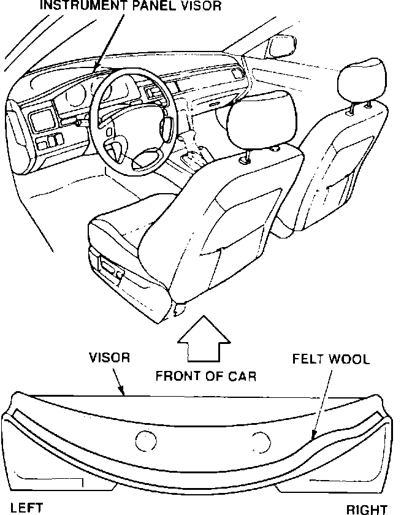

Squeaks Around the Instrument Panel Visor
Symptom:Creaking from the instrument panel visor area.
Probable Cause:
Loose screws between the instrument panel visor and the dashboard.
Corrective Action:
Insulate the dashboard behind the instrument panel visor.

1. Remove the instrument panel visor.
2. Apply the 1 mm felt wool to the instrument panel visor and the dashboard
NOTE:
The instrument panel visor extends farther out on the left side that it does on the right. Check contact areas carefully before applying the felt wool.
3. Reinstall the instrument panel visor, and tighten the screws securely.
WARRANTY CLAIM INFORMATION
Operation number:
841010
Flat rate time:
0.2 hour
Failed P/N:
77200-SL5-A00ZD
Defect code:
042
Contention code:
B07